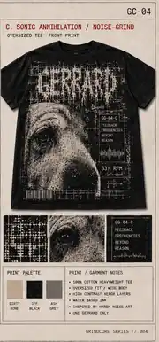
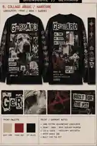

Photocopied, compressed and deliberately abrasive. Gerrard stays recognisable as a Shar Pei while the surrounding system uses coarse halftone, cut-and-paste type and unstable flyer composition. This is not the Black Metal page with another font.
Each route changes the hierarchy, image crop, type behaviour and garment role. The common thread is xerox damage and one-colour print economy—not a repeated poster template.
A / PRIMARY ROUTE
GC-ALAUNCH CANDIDATE
Blast Portrait
A single aggressive crop, compressed GERRARD wordmark and torn-caption fragments. Best for a large front print without background scenery.
Hierarchy
Logo → face → fragments
Print
Off-white ink on black
Best on
Tee / longsleeve

B / CUT + PASTE
GC-BBACK-PRINT ROUTE
One Second Legend
Short, stupidly direct and built like a photocopied seven-inch insert. Smaller front hit; dense oversized back composition.
Hierarchy
Slogan → crop → name
Print
Black / bone / optional red
Best on
Longsleeve / hoodie
GC-CTYPOGRAPHIC ROUTE
Noise Wall
Gerrard is reduced to a blown-out, recognisable signal inside a brutal block of type. Less collage, more impact; no decorative occult filler.
FRONT / SMALL CHEST HITBACK / FULL-WIDTH BLOCKSLEEVES / OPTIONAL TEXT

02 / CREATIVE CONTROL
GRINDCORE, NOT METAL GENERIC.
The page is deliberately built around abrasion and economy. It must never drift back into cathedral framing, symmetrical ritual graphics or another fake band-poster composition.
What belongs
01Coarse photocopy and halftone degradation
02Unstable, asymmetric flyer composition
03Compressed custom lettering with readable name
04One-colour print logic and believable ink coverage
05Gerrard’s Shar Pei likeness preserved through distortion
What gets rejected
01Black Metal arches, sigils or ritual symmetry
02Generic drippy logo pasted over the same layout
03Random gore, skulls or mosh-pit filler without purpose
04AI-distorted muzzle, ears, eyes or body proportions
05Unprintable grey mush disguised as “texture”
03 / GARMENT LOGIC
BUILT FOR THE PRINT.
The same artwork cannot simply be shrunk across every blank. Each format gets a deliberate front, back and sleeve hierarchy.
01 / PRIMARY
Tee
Oversized front portrait or small front hit with a full back flyer.
FIRST SAMPLE02 / PRIMARY
Longsleeve
Back-led composition with controlled sleeve text, never decorative filler.
HIGH POTENTIAL03 / CORE
Pullover
Square back block, simple chest mark and no crowded pocket conflict.
AFTER TEE04 / CORE
Zip Hoodie
Split-safe chest system with the visual weight moved to the back.
LAYOUT TEST05 / FIT
Girlie / Fitted
Rebuilt narrow composition rather than a reduced unisex rectangle.
SEPARATE PROOF06 / ADD-ON
Sticker
One simplified mark extracted from the approved garment artwork.
SUPPORTING
04 / BUILD STATUS
DIRECTION BUILT. PRODUCT NOT LIVE.
The three Grindcore systems are now presented as separate routes. Garment mockups, likeness review and production tests still have to be completed before one route becomes a sellable product.
Ordering disabled
DONEThree differentiated art directions
NEXTSelect one route for full garment mockups
THENMobile crop, print-area and likeness QA
BEFORE SALESupplier, cost, margin and UK fulfilment checks
 A / PRIMARY ROUTE
A / PRIMARY ROUTE